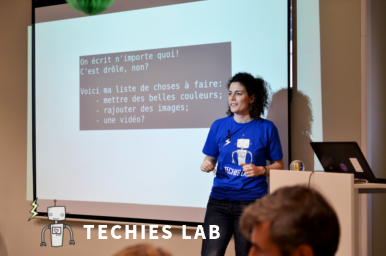

À propos
Le Techies Lab est une initiative lancée en 2015 en Belgique, par une joyeuse bande de bénévoles passionnés, pour permettre aux enfants et adolescents de découvrir, expérimenter, apprendre et s'amuser avec les nouvelles technologies (robots, code, jeux vidéos, impression 3D...) Au travers de stages d'une semaine et d'ateliers d'une après-midi/journée, ouvrons-leur les portes de la créativité!
Notre objectif est transmettre la joie du bidouillage, déconstruire pour mieux reconstruire et comprendre l'envers du décor. Nos ateliers sont amusants (on rit!), pratiques (on fait soi-même!) et recyclables (on ramène chez soi nos projets pour les bichonner et continuer à les développer).

